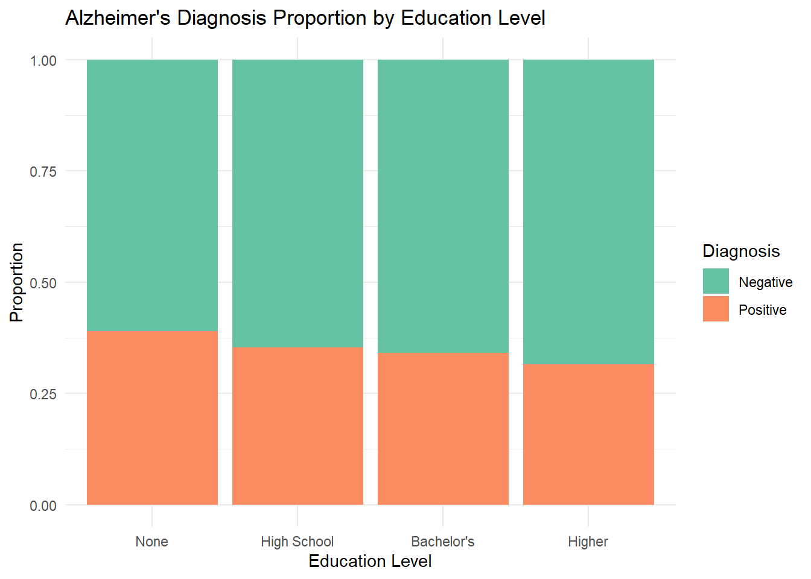
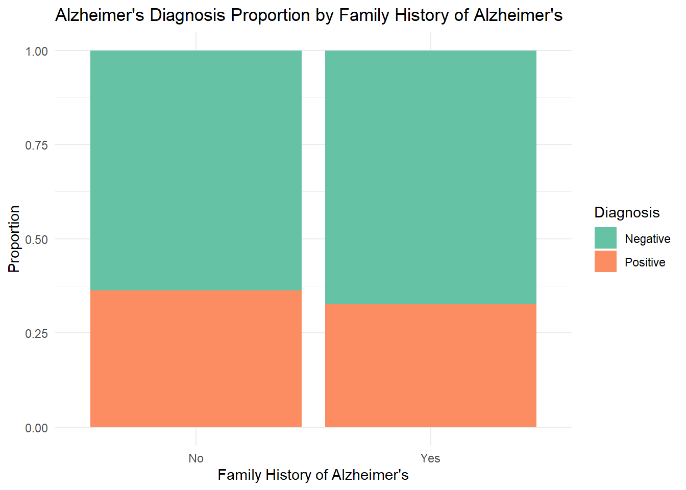
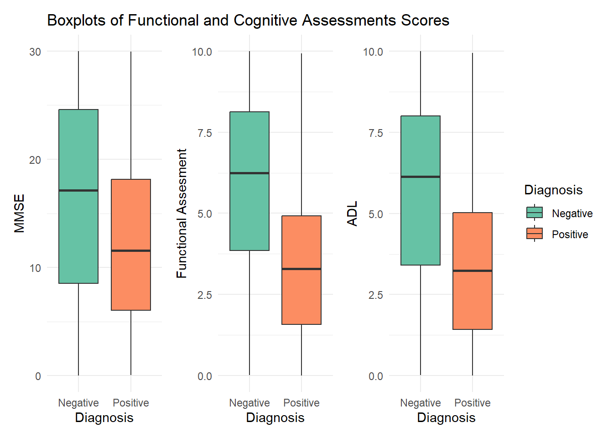
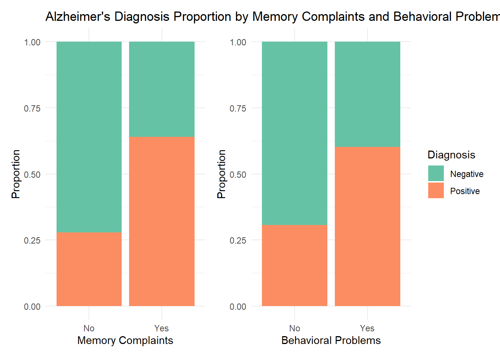
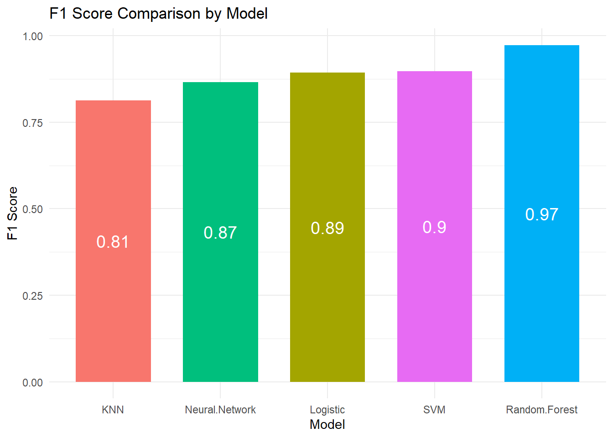

Detecting Alzheimer’s Disease with Machine Learning
Chapter 1: The Quest Begins
Alzheimer’s is a dreadful neurodegenerative disorder that erodes memory, cognitive function, and quality of life. Diagnosing this disease is really challenging. While the disease is usually diagnosed after significant cognitive decline, there are no strict rules for doctors to diagnose the disease which can cause bias and difficulty when diagnosing. My aim in this study is to explore whether machine learning (ML) can aid in the accurate diagnosis of Alzheimer’s, potentially changing the way we detect and manage the disease.
In this report, I will take you through a journey to find patterns, evaluate different models and discuss the results. Let’s begin by understanding the dataset for this study:
Chapter 2: Gathering the Evidence
To begin, I collected a dataset from Kaggle Alzheimer’s Disease Dataset. Understanding this dataset will help us find patterns that could help diagnose Alzheimer’s. The dataset consists of:
Demographic Information: Age, Gender, Ethnicity, and Education Level.
Lifestyle Factors: BMI, Smoking, Alcohol Consumption, Physical Activity, Diet Quality, and Sleep Quality.
Medical History: Family History Alzheimers, Cardiovascular Disease, Diabetes, Depression, Head Injury, and Hypertension.
Clinical Measurements: Systolic BP, Diastolic BP, Total Cholesterol, Cholesterol LDL, Cholesterol HDL, and Cholesterol Triglycerides.
Cognitive and Functional Assessments: Mini-Mental State Examination, Functional Assessment, Memory Complaints, Behavioral Problems, and Activities of Daily Living.
Symptoms: Confusion, Disorientation, Personality Changes, Difficulty Completing Tasks, and Forgetfulness.
Diagnosis: The ground truth—whether the patient has Alzheimer’s disease or not.
Chapter 3: Diving into the Data
First, I wanted to understand the most important factors that could help in diagnosing Alzheimer’s disease. This is important to understand the data and lay the groundwork for model building. To achieve this, I began with an Exploratory Data Analysis (EDA), creating a series of visualizations to uncover potential patterns in the dataset.
Demographic Information Analysis
Among the various demographic variables in the dataset—such as age, gender, ethnicity, and education level—I found that Education Level exhibited the most interesting trends. Visualizing the relationship between education and diagnosis outcomes (as shown in Figure Figure 1) revealed a subtle but notable pattern: individuals with lower education levels appear to have a slightly higher proportion of positive Alzheimer’s diagnoses compared to those with higher levels of education. This finding might suggest that higher education could act as a protective factor against Alzheimer’s, as individuals with more education often engage in activities that stimulate mental exercise.
Lifestyle Factors Analysis
In exploring the lifestyle factors in the dataset, which included variables such as Body Mass Index (BMI), smoking habits, alcohol consumption, physical activity, diet quality, and sleep quality, none of these metrics exhibited clear or significant patterns in relation to Alzheimer’s diagnosis. This lack of noticeable patterns suggests that, within the scope of this dataset, these lifestyle factors do not appear to have a strong influence on the diagnosis of Alzheimer’s disease.
Medical History Analysis
In examining the medical history factors within the dataset—such as Family History of Alzheimer’s, Cardiovascular Disease, Diabetes, Depression, Head Injury, and Hypertension—none of these variables showed clear or significant patterns in relation to Alzheimer’s diagnosis. This finding suggests that, within the scope of this dataset, these factors do not appear to have a strong influence on the likelihood of an Alzheimer’s diagnosis. Interestingly, despite the common belief that having a family history of Alzheimer’s may increase one’s risk, this dataset did not reveal a significant correlation between a family history of the disease and the diagnosis (Figure 2).

Clinical Measurements Analysis
When evaluating the clinical measurements included in the dataset—such as Systolic Blood Pressure, Diastolic Blood Pressure, Total Cholesterol, LDL Cholesterol, HDL Cholesterol, and Triglycerides—no clear or significant patterns emerged in relation to Alzheimer’s diagnosis. This observation indicates that, based on the available data, these clinical metrics do not seem to have a strong impact on the probability of an Alzheimer’s diagnosis.
Cognitive and Functional Assessments Analysis
Among the diverse set of Cognitive and Functional Assessments available in the dataset—including the Mini-Mental State Examination (MMSE), Functional Assessments, Memory Complaints, Behavioral Problems, and Activities of Daily Living (ADLs)—several intriguing trends emerged. For MMSE, ADL and Functional assessment, people with Alzheimer’s showed lower scores overall compared to people that do not have the disease (Figure 3). Also, as expected, people with memory complaints and behavioral problems showed a higher proportion of positive diagnosis of Alzheimer’s (Figure 4).


Symptoms Analysis
Finally, in analyzing the symptoms recorded in the dataset—such as Confusion, Disorientation, Personality Changes, Difficulty Completing Tasks, and Forgetfulness—no distinct or significant patterns were identified in relation to Alzheimer’s diagnosis. This suggests that, given the current dataset, these clinical symptoms do not appear to significantly influence the likelihood of an Alzheimer’s diagnosis.
Chapter 4: Building Machine Learning Models to Predict Alzheimer’s
In this chapter, you will see the application of various machine learning models to predict Alzheimer’s disease. The goal is to identify which models provide the most accurate predictions based on the dataset. I explored five different models: Random Forest, K-Nearest Neighbors (KNN), Support Vector Machine (SVM), Logistic Regression, and Neural Networks. Each model has its own strengths and weaknesses, which I will evaluate in terms of their performance in predicting Alzheimer’s disease.
Random Forest
Random Forest is an ensemble learning method that constructs multiple decision trees during training and outputs the mode of the classes (classification) or mean prediction (regression) of the individual trees. It’s known for its robustness and ability to handle large datasets with numerous features.
K-Nearest Neighbors (KNN)
K-Nearest Neighbors is a simple, yet effective, classification algorithm that assigns a class to a sample based on the majority class among its k-nearest neighbors. KNN is intuitive and easy to implement but can be computationally expensive, especially with large datasets.
Support Vector Machine (SVM)
Support Vector Machine is a supervised learning model that finds the hyperplane that best separates different classes in the feature space. SVM is particularly effective for high-dimensional spaces and can handle non-linear decision boundaries using kernel functions.
Logistic Regression
Logistic Regression is a statistical model used for binary classification that estimates the probability of a class based on the logistic function. It is a simple and interpretable model, often used as a baseline for more complex algorithms.
Neural Networks
Neural Networks, are powerful algorithms capable of learning complex patterns through multiple layers of abstraction. They are highly flexible and can model non-linear relationships in the data.
Building the models
The dataset was divided into two subsets:
Training Set (80%): This portion of the data is used to train and tune the machine learning models. It provides the model with examples to learn from and optimize its parameters.
Test Set (20%): This subset is reserved for evaluating the performance of the trained models. It acts as a proxy for new, unseen data and helps assess how well the model generalizes to other instances.
All models were implemented and evaluated using R programming in RStudio. Each model was assessed using the F1 score, a crucial metric that balances both precision and recall, providing a comprehensive measure of model performance, especially in the context of imbalanced datasets.
As illustrated in Figure Figure 5, the Random Forest model emerged as the most effective classifier, achieving an impressive F1 score of 97%. This high F1 score underscores the Random Forest’s exceptional ability to balance precision (the accuracy of positive predictions) and recall (the model’s ability to identify all relevant positive cases), even in the presence of class imbalance. The model’s ensemble approach, which aggregates the predictions of multiple decision trees, contributes to its robustness and reliability in making accurate predictions.
In contrast, other models faced challenges due to the class imbalance within the dataset. Specifically, models such as KNN, SVM, Logistic Regression, and Neural Networks exhibited lower F1 scores, reflecting difficulties in achieving a balance between precision and recall. These models often showed significant discrepancies in either precision or recall, which impacted their overall effectiveness in correctly identifying Alzheimer’s cases.

Chapter 5: Did we make it?
The analysis clearly demonstrates that the Random Forest model outperforms other machine learning approaches in diagnosing Alzheimer’s disease, achieving a noteworthy F1 score of 97%. This exceptional performance underscores Random Forest’s strength in balancing precision and recall, crucial for accurate and reliable diagnosis. The ensemble nature of Random Forest, combining multiple decision trees, enables it to handle class imbalance effectively, ensuring robust predictions even in challenging scenarios.
In contrast, other models such as K-Nearest Neighbors (KNN), Support Vector Machine (SVM), Logistic Regression, and Neural Networks exhibited lower F1 scores, primarily due to difficulties in managing the class imbalance within the dataset. These models showed variability in precision and recall, which compromised their overall effectiveness and reliability.
Value of Findings
The superior performance of Random Forest in this study is highly valuable for several reasons:
Enhanced Diagnostic Accuracy: Achieving a high F1 score indicates that the Random Forest model excels in identifying both positive and negative cases of Alzheimer’s disease. This means fewer false positives and false negatives, leading to more accurate diagnoses.
Improved Patient Outcomes: Accurate early diagnosis of Alzheimer’s can significantly impact patient outcomes by enabling timely intervention and management strategies. A reliable model like Random Forest can support clinicians in making better-informed decisions.
Potential for Broader Application: The success of Random Forest in this context suggests that it could be a valuable tool in other medical diagnostic applications or research areas where class imbalance and complex patterns are present.
Overall, the findings highlight Random Forest’s potential as a powerful tool for diagnosing Alzheimer’s disease and other medical conditions, offering a path to more accurate, reliable, and actionable insights in clinical practice.